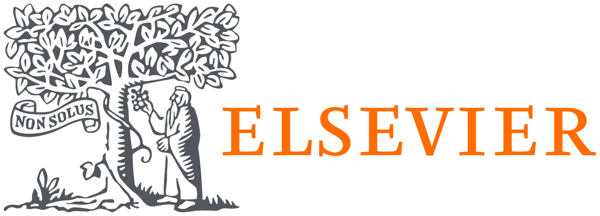

Unpublished Manuscripts

Credible, Sealed-bid, Optimal Repeated Auctions With Differentiable Economics
Davidson Cheng, Yang Hong, Ian Miers, John Dickerson, Michael Curry
under review

Asymmetric Equilibria in Symmetric Multiplayer Prisoners' Dilemma Supergames
Davidson Cheng
Accepted for presentation at the 33rd International Conference on Game Theory, Stony Brook
[arXiv] [20-minute slides]
Peer-reviewed Publications
(I publish under both "Davidson Cheng" and "Chang Cheng")
Rawlsian Fairness in Online Bipartite Matching: Two-sided, Group, and Individual
Esmaeili, Seyed, Sharmila Duppala, Davidson Cheng, Vedant Nanda, Aravind Srinivasan, John Dickerson
 The 37th AAAI Conference on Artificial Intelligence
The 37th AAAI Conference on Artificial Intelligence

Computer-aided Automatic Planning and Biomechanical Analysis of a Novel Arc Screw for Pelvic Fracture Internal Fixation
Qing Yand, Siru Feng, Jian Song, Chang Cheng, Chengdi Liang, Yu Wang
 Computer Methods and Programs in Biomedicine
[Full Paper at Elsevier]

Texture Identification and Object Recognition Using a Soft Robotic Hand Innervated Bio-inspired Proprioception
Yadong Yan, Chang Cheng, Mingjun Guan, Jianan Zhang, Yu Wang

 Machines
Machines
[Full Paper at MDPI]

The Influence of the Abduction Joints of Four Fingers to Grasp: Experimental and Simulated Verification
Yadong Yan, Chang Cheng, Mingjun Guan, Jianan Zhang, and Yu Wang
 Applied Sciences
Applied Sciences
[ Full Paper at MDPI]
[PDF]

Tactile Sensing With a Tendon-Driven Soft Robotic Finger
Chang Cheng, Yadong Yan, Mingjun Guan, Jianan Zhang, and Yu Wang
★ Best Presenter Award [certificate]

 International Conference on Control, Mechatronics and Automation
International Conference on Control, Mechatronics and Automation
[Full Paper]
[arXiv]
[15-minute slides]
Media Coverage:
[TechXplore]
[Interesting Engineering]

A Soft Robotic Gripper Based on Bioinspired Fingers
Yadong Yan, Chang Cheng, Mingjun Guan, Jianan Zhang and Yu Wang
 International Conference of the IEEE Engineering in Medicine and Biology Society
International Conference of the IEEE Engineering in Medicine and Biology Society
[Full Paper]
[slides by Yadong Yan]

An Internal Arc Fixation Channel and Automatic Planning Algorithm for Pelvic Fracture
Qing Yang, Jian Song, Chang Cheng, Chao Shi, Chendi Liang and Yu Wang
International Conference on Robotics, Control and Automation Engineering
[Full Paper]
[arXiv]
[Slides by Qing Yang]

Design and Experimental Verification of Underactuated Prosthetic Hand
Jianan Zhang, Yadong Yan, Haotian Yao, Jiangzhen Guo, Chang Cheng and Yu Wang
International Conference on Robotics, Control and Automation Engineering
[Full Paper]
[Slides by Jianan Zhang]

A Tendon-Driven Prosthetic Hand using Continuum Structure
Yadong Ya, Yu Wang, Xiangqian Chen, Chao Shi, Jiazheng Yu and Chang Cheng
International Conference of the IEEE Engineering in Medicine and Biology Society
[Full Paper]
[IEEE Xplore]